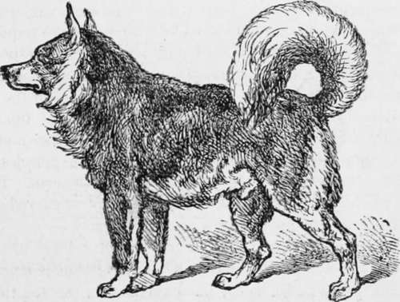

The Bones Of The Canine Skeleton
Description
This section is from the book "Breeding, Training, Management, Diseases Of Dogs", by Francis Butler. Also available from Amazon: Breeding, training, management, diseases.
The Bones Of The Canine Skeleton
The first portion of the skeleton which claims our attention is the skull. The shape of this extremity is familiar to every one, and differs in the various breeds, being- more elongated in the greyhound, for instance, than in the Bulldog or Newfoundland, where it forms a well-rounded dome, with a wide cranial cavity, or brain-pan. All that it is necessary for the reader to note is —
The General Configuration of the Skull and its different shapes according to breed, bearing in mind that nearly all the breeds are well developed as regards brain-pan.
The Nasal Bone, well developed in the dog.
The Occipital Bone, also well developed. This portion of the dog's head is called the occiput.
The Orbital Cavity of the Eye.
The Superior Maxilla, or upper jaw.
The Inferior Maxilla, or lower jaw. The teeth of the two jaws in the majority of breeds ought to meet evenly in front; in other breeds, as the Bull, the King Charles', etc, the under jaw projects more or less.
The Teeth
Unlike the cat, who has to be content with thirty teeth, the dog is liberally supplied with these useful weapons, having, when full-grown, forty-two—viz., 12 incisors, 4 canine or tusks, and 2G molars; 20 teeth in the upper, and 22 in the lower jaw.
Dogs begin to get their first or milk teeth at a month old, and the permanent teeth ought to be all perfect when the animal is six and a half months old.
The Temporal Bone, more prominent in some dogs than in others.
We next come to the Vertebral Column. This column or spine is designed by Nature for the protection of the nervous spinal column, a continuation of the brain matter.
From this column nerves escape by foramina through the vertebrae, to be distributed to all the various organs, muscles, and bones of the body. The vertebral column is also a support to the limbs and the whole osseous system. The spine is composed of small round perforated bones called vertebrae, beautifully hinged together. They are divided into —
. The Seven Cervical Vertebral, corresponding to the neck of the animal.
The Thirteen Dorsal Vertebraythe back.
The Seven Lumbar Vertebral—the loin. The Three Sacral Vertebral, forming a portion of the pelvis, and
The Caudal Vertebral, forming the bones of the tail, or stern, and numbering (if left alone) from 16 to 21.
The os innominatum is the principal bone of the pelvis. Hinged to this by a ball and socket joint is
The Femur— the thigh-bone—a long, sturdy, and strong bone, jointed by its lower extremity to three bones, namely— The Patella, or knee-pan; and
The Tibia, which gives its chief support to the patella, and is the principal bone of the leg or hock, is, like the femur, a long, strong bone, but differently shaped. The otln>r bone of the leg is
The Fibula, a much more slender bone, situated on the outer portion of the tibia, and joined to that bone by a strong fibrous tissue.
The Bones of the Hock Joint.
The Foot Proper, commencing at the hock joint, comprises the calcaneus - or heel-bone—the astragalus, the schaphoid. three cuneiform bones; five metatarsal bones— the longest bones in the foot (one of these metatarsals is only rudimentary); and the first, second, and third phalanges, ending in the nails.
The ribs of the dog are in number thirteen at each side. They are articulated to the vertebrae above and partly to the sternum, or to each other beneath. The ribs of nearly all classes of well-bred dogs ought to be well sprung.
The Sternum,, or breast-bone, is a flattish or scimitai'-shaped bone, composed of several pieces joined together, and lying underneath the ribs, at the lower portion of the chest. It needs little further description here.
The shoulder in the dog is composed of two bones, the Clavicle and the Scapula. The former of these barely needs mention, so unimportant and rudimentary is it.
The Scapula or shoulder-blade is a much more important bone. It is flit, broad, and moderately strong, especially towards its lower portion, where it articulates with the humerus* Its shape can be seen from a glance at the illustration. In most dogs, especially sporting dogs, this bone should slope well backwards. On the outer surface a strong bony ridge descends for the attachment of the muscles.
The Humerus is the one single bone of the arm. It is a long bone, very strong, and somewhat bent or curved.
The bones of the forearms are two, namely
The Radius, and The Ulna. In the human being the radius is much the stronger bone, and the two lie parallel. In the dog the two bones are about equal in size, the ulna being thicker at its upper portion, and the radius stronger at its lower. Again, the bones are not perfectly parallel, but slightly, or in a very small degree, positioned like a St. Andrew's cross. These two bones are hinged to each other at the upper and lower surfaces.
From the lower portion of these two bones the forefoot proper commences, comprising the following bones, viz.—
Seven carpal bones, corresponding to the human wrist-bones, five metacarpal bones, corresponding to the bones joining the wrist to the fingers in the human subject (the bones that are in the back of the hand), and the five digits or lingers, which ill the dog are analogous to those of the human skeleton. Each digit is composed of three columnar bones. Lastly, they are united at their extremities to the nails, which grow therefrom.
The Only Esquimaux In The Show.
Continue to: